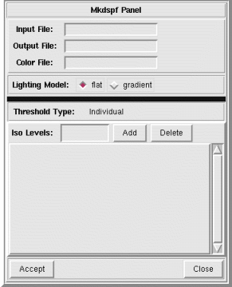

NVIZ Reference Manual
CONTENTS
Mkdspf Panel
The Mkdspf panel lets you create isosurfaces display files
(dspf) from GRASS volume data (grid3 files).
-

OPTIONS
- Input File
- Enter the GRASS grid3 file name to use for creating the isosurfaces.
- Output File
- Enter an output display file name (dpsf).
- Color File
- Enter the GRASS grid3 file to use for isosurface color.
- Lighting Model
- Lets you select the type of shading used for displaying the isosurfaces.
- flat
- Uses flat shading for the isosurfaces. This is the fastest method of shading.
- gradient
- Uses gradient (gouraged) shading of the isosurfaces. This is the most realistic shading method.
- Threshold Type
- Displays the threshold menu settings. You select one of the three methods.
- Accept
- Uses the current isosurface display parameters to create the display file (dspf).
- Close
- Closes the Mkdspf panel.